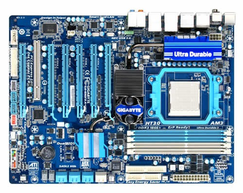

Il bus dati è responsabile del trasferimento delle informazioni tra la CPU, la memoria e gli altri dispositivi. Questo bus può avere diverse larghezze (ad esempio 8, 16, 32 o 64 bit) e determina la quantità di dati che possono essere trasferiti simultaneamente.
Il bus indirizzi trasporta gli indirizzi di memoria a cui la CPU desidera accedere per leggere o scrivere dati. La larghezza del bus indirizzi determina la quantità massima di memoria indirizzabile dal sistema.
Il bus di controllo gestisce i segnali di controllo e coordinamento tra i vari componenti del computer. Include segnali come lettura/scrittura, clock e interruzioni, essenziali per garantire il corretto funzionamento delle operazioni di input/output.
Il bus PCI (Peripheral Component Interconnect) collega le schede di espansione alla scheda madre. Le versioni moderne includono il PCI Express (PCIe), che offre velocità di trasferimento dati notevolmente superiori grazie alla sua architettura a corsie indipendenti. PCIe è disponibile in diverse configurazioni (x1, x4, x8, x16) e viene utilizzato per schede grafiche, SSD NVMe e altre periferiche ad alta velocità.
Il bus USB (Universal Serial Bus) consente il collegamento di dispositivi esterni come mouse, tastiere e stampanti. Offre diverse versioni con velocità variabili, come USB 2.0 (fino a 480 Mbps), USB 3.0 (fino a 5 Gbps) e USB 3.1/3.2 (fino a 10/20 Gbps).
Il bus SATA (Serial ATA) viene utilizzato per collegare hard disk e unità SSD alla scheda madre. Le versioni più recenti, come SATA III, possono raggiungere velocità fino a 6 Gbps, migliorando le prestazioni di archiviazione.